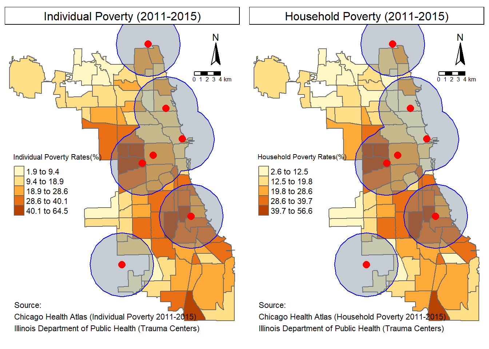

Chicago Trauma Center Service Areas
Yoon Hong Park
July 2, 2018
This project was tha last assignment from the “Introduction to GIS and Spatial Analysis for Social Scientists” course taught by Dr. Marynia Kolak. This project was to create a marketing report for a specific community area in terms of one specific industry. I chose health industry, especially in term of trauma centers, and created three different sets of maps, each of which represented service areas of existing trauma centers, those service areas on the crime/accident injuries maps, and the service areas on the poverty/poverty rate maps. Buffers and Points-in-Polygon methods were used.
Basic Setup
Set the current working directory
setwd("../../2018.3 Summer/Intro to GIS/Assignment 3")Load Libraries
This is an effort to replicate what I have done for the assignment. Everytime I coded, I always put all the libraries that were used at the very beginning part of the code.
library(sp)
library(sf)
library("rgdal")
library("rgeos")
library("tmap")
library(leaflet)
library(raster)
library(adehabitatHR)## Loading required package: deldir## deldir 0.1-15## Loading required package: ade4## Loading required package: adehabitatMA##
## Attaching package: 'adehabitatMA'## The following object is masked from 'package:raster':
##
## buffer## Loading required package: adehabitatLT## Loading required package: CircStats## Loading required package: MASS##
## Attaching package: 'MASS'## The following objects are masked from 'package:raster':
##
## area, select## Loading required package: bootlibrary(data.table)##
## Attaching package: 'data.table'## The following object is masked from 'package:raster':
##
## shiftlibrary(maptools)## Checking rgeos availability: TRUELoad the boundary shapefile
To unify the coordinate system, I chose EPSG 4326 system.
ComArea.Areas <- readOGR("../../2018.3 Summer/Intro to GIS/Assignment 3/Boundaries - Community Areas (current)", "geo_export_7572d77c-9922-44f5-ba1b-d9dd6bc3fa86")## OGR data source with driver: ESRI Shapefile
## Source: "C:\Users\yhth9\Documents\2018.3 Summer\Intro to GIS\Assignment 3\Boundaries - Community Areas (current)", layer: "geo_export_7572d77c-9922-44f5-ba1b-d9dd6bc3fa86"
## with 77 features
## It has 26 fields
## Integer64 fields read as strings: Geo_ID Numberhead(ComArea.Areas)## perimeter community shape_len shape_area area comarea area_numbe
## 0 0 DOUGLAS 31027.05 46004621 0 0 35
## 1 0 OAKLAND 19565.51 16913961 0 0 36
## 2 0 FULLER PARK 25339.09 19916705 0 0 37
## 3 0 GRAND BOULEVARD 28196.84 48492503 0 0 38
## 4 0 KENWOOD 23325.17 29071742 0 0 39
## 5 0 LINCOLN SQUARE 36624.60 71352328 0 0 4
## area_num_1 comarea_id Category SubCat
## 0 35 0 Social and Economic Factors Income
## 1 36 0 Social and Economic Factors Income
## 2 37 0 Social and Economic Factors Income
## 3 38 0 Social and Economic Factors Income
## 4 39 0 Social and Economic Factors Income
## 5 4 0 Social and Economic Factors Income
## Indicator Year Geography Geo_Group Geo_ID
## 0 Individual poverty 2011-2015 Community Area 35-Douglas 35
## 1 Individual poverty 2011-2015 Community Area 36-Oakland 36
## 2 Individual poverty 2011-2015 Community Area 37-Fuller Park 37
## 3 Individual poverty 2011-2015 Community Area 38-Grand Boulevard 38
## 4 Individual poverty 2011-2015 Community Area 39-Kenwood 39
## 5 Individual poverty 2011-2015 Community Area 4-Lincoln Square 4
## Number Percent Map_Key Flag field_12 field_13 field_14 field_15
## 0 7040 39.5 quintiles G <NA> <NA> <NA> <NA>
## 1 2131 33.3 quintiles G <NA> <NA> <NA> <NA>
## 2 814 33.4 quintiles G <NA> <NA> <NA> <NA>
## 3 7957 35.5 quintiles G <NA> <NA> <NA> <NA>
## 4 3891 22.3 quintiles G <NA> <NA> <NA> <NA>
## 5 4797 11.9 quintiles G <NA> <NA> <NA> <NA>
## field_16 field_17
## 0 <NA> <NA>
## 1 <NA> <NA>
## 2 <NA> <NA>
## 3 <NA> <NA>
## 4 <NA> <NA>
## 5 <NA> <NA>crs(ComArea.Areas)## CRS arguments: +proj=longlat +ellps=WGS84 +no_defsCRS.new <- CRS("+init=EPSG:4326")
ComArea.Transform <- spTransform(ComArea.Areas, CRS.new)Data Merging/Cleaning & Analysis
Trauma Center Service areas
Since there was no official data set that has the exact coordinates in both EPSG 4326 system and EPSG 3529 system, I made my own data file by looking up the list from the Department of Public Health of the State of Illinois, searching them on Google Map, getting the EPSG 4326 coordinates and turning them into EPSG 3529 coordinates at the “EPSG.io” website. As the number of trauma centers was 7 at most, including the two trauma centers which are technically located outside of Chicago, I did this manually and saved as both csv files and shapefiles. If there were too many, I might code a repetitive process of getting coordiantes through Google API. I made two different csv files, of which one covered only truama centers in the City of Chicago while the other covered two more trauma centers outside of Chicago that also served some parts of the city.
traumacenter <- readOGR("../../2018.3 Summer/Intro to GIS/Assignment 3", "Trauma Centers")## OGR data source with driver: ESRI Shapefile
## Source: "C:\Users\yhth9\Documents\2018.3 Summer\Intro to GIS\Assignment 3", layer: "Trauma Centers"
## with 5 features
## It has 4 fieldstraumacenter.Transform <- spTransform(traumacenter, CRS.new)
traumacenterupd <- readOGR("../../2018.3 Summer/Intro to GIS/Assignment 3", "Trauma Centers (update)")## OGR data source with driver: ESRI Shapefile
## Source: "C:\Users\yhth9\Documents\2018.3 Summer\Intro to GIS\Assignment 3", layer: "Trauma Centers (update)"
## with 7 features
## It has 9 fields
## Integer64 fields read as strings: Leveltraumacenterupd.Transform <- spTransform(traumacenterupd, CRS.new)
crs(traumacenter) # no_defs## CRS arguments: +proj=longlat +ellps=WGS84 +no_defscrs(traumacenterupd) # no_defs## CRS arguments: +proj=longlat +ellps=WGS84 +no_defsSince those seem to not have specific coordinate system, I transformed their coordinate systems into EPSG 4326 and checked if the transformation worked well.
CRS.new <- CRS("+init=EPSG:4326")
traumacenter.Transform <- spTransform(traumacenter, CRS.new)
traumacenterupd.Transform <- spTransform(traumacenterupd, CRS.new)
tm_shape(ComArea.Transform) + tm_borders() +
tm_shape(traumacenter.Transform) + tm_dots(col = "red")tm_shape(ComArea.Transform) + tm_borders() +
tm_shape(traumacenterupd.Transform) + tm_dots(col = "red") It seems both worked well, so then I switched my focus on creating buffers to abstractly show the service area that each trauma center covered. From the literature reviews, the largest distance from a trauma center to a trauma incident that would make patients survive with high possibility was 5~10 miles, so I made a buffer of 10 miles from each trauma center. Since the buffer system used meter-system, I put equivalent meter-values to 10 miles.To make buffer areas, I needed to open those csv files instead of shapefiles.
traumacenterUTM <- read.csv("../../2018.3 Summer/Intro to GIS/Assignment 3/Trauma Centers.csv")
tcenter.points <- SpatialPointsDataFrame(traumacenterUTM[,7:8], traumacenterUTM, proj4string = CRS("+init=EPSG:3529"))
tcenter_buffers <- gBuffer(tcenter.points, width = 8046.72*2, byid = TRUE)
traumacenterUTMupd <- read.csv("../../2018.3 Summer/Intro to GIS/Assignment 3/Trauma Centers (update).csv")
tcenterupd.points <- SpatialPointsDataFrame(traumacenterUTMupd[,7:8], traumacenterUTMupd, proj4string = CRS("+init=EPSG:3529"))
tcenter_buffers.upd <- gBuffer(tcenterupd.points, width = 8046.72*2, byid = TRUE)Then, I checked whether the buffers were well constructed.
tm_shape(ComArea.Transform) + tm_borders() +
tm_shape(tcenter_buffers) + tm_fill(col = "slategray") + tm_borders(col = "blue") +
tm_shape(traumacenter.Transform) + tm_dots(col = "red") tm_shape(ComArea.Transform) + tm_borders() +
tm_shape(tcenter_buffers.upd) + tm_fill(col = "slategray") + tm_borders(col = "blue") +
tm_shape(traumacenterupd.Transform) + tm_dots(col = "red") To beautify the overlapped areas, I merged those buffers, which are the final results for creating service areas.
union.buffers <- gUnaryUnion(tcenter_buffers)
union.buffersupd <- gUnaryUnion(tcenter_buffers.upd)Crime Data (PIP Method)
The crime data was available from the City of Chicago Data Portal. First, I loaded the crime data and subsetted by serioucs crimes, including “HOMICIDE”, “BATTERY”, “CRIM SEXUAL ASSAULT”, “ASSAULT”, “WEAPONS VIOLATION.”
Crime18.Data <- fread("../../2018.3 Summer/Intro to GIS/Assignment 3/Crimes_-_2018.csv", header = T)
CrimeList <- c("HOMICIDE", "BATTERY", "CRIM SEXUAL ASSAULT", "ASSAULT", "WEAPONS VIOLATION")
Crime18.Subset <- Crime18.Data[Crime18.Data$'Primary Type' == CrimeList, ]
Crime18.SubSubset <- Crime18.Subset[!grep("POSS", Crime18.Subset$Description), ]
Crime18.SubSubset <- Crime18.SubSubset[!grep("SALE", Crime18.SubSubset$Description), ]
Crime18.SubSubset <- Crime18.SubSubset[!grep("RECKLESS", Crime18.SubSubset$Description), ]
Crime18.SubSubset <- Crime18.SubSubset[!grep("DEFACE", Crime18.SubSubset$Description), ]
#write.csv(Crime18.SubSubset,"Crimes_-_2018(subset).csv")
With those subset of the data, I used GeoDa to create a shapefile and reloaded the shapefile for points-in-polygon method, which required me to transform the shapefile into EPSG 4326 coordinate system.
ChiCrimes <- readOGR("../../2018.3 Summer/Intro to GIS/Assignment 3", "Crimes_-_2018(subset)")## OGR data source with driver: ESRI Shapefile
## Source: "C:\Users\yhth9\Documents\2018.3 Summer\Intro to GIS\Assignment 3", layer: "Crimes_-_2018(subset)"
## with 7322 features
## It has 23 fields
## Integer64 fields read as strings: field_1 Prima_Type Descript LocDescrpt Arrest Beat District WardChiCrimes.Transform <- spTransform(ChiCrimes, CRS.new)
Now, I did PiP to count those crimes per community area. This was the final result of PIP.
Crimepip <- over(ChiCrimes.Transform, ComArea.Transform)
ChiCrimes@data <- cbind(ChiCrimes.Transform@data, Crimepip)
ChiCrimesDF <- as.data.frame(ChiCrimes.Transform)
ChiCrimeByCom <- as.data.frame(table(ChiCrimesDF$ComArea))
names(ChiCrimeByCom) <- c("area_numbe","CrimeCt")
ComArea.Transform@data <- merge(ComArea.Transform@data, ChiCrimeByCom, by = "area_numbe", all.x = TRUE)
crs(ComArea.Transform)## CRS arguments:
## +init=EPSG:4326 +proj=longlat +datum=WGS84 +no_defs +ellps=WGS84
## +towgs84=0,0,0Accident Data (PIP Method)
The accident data came from the National Highway Traffic Safety Administration. I downloaded the most recent data, which covered the whole year of 2016 and subsetted the data by the severe injuries, which were represented as more than or equal to 3 in the “injury severity” column that would lead to trauma centers. For convenience, I subsetted the data by using Excel and saved it also as a shapefile by using GeoDa. I also reloaded the boundary shapefile just to avoid merging the data wrongly.
ComAreas <- readOGR("../../2018.3 Summer/Intro to GIS/Assignment 3/Boundaries - Community Areas (current)", "geo_export_7572d77c-9922-44f5-ba1b-d9dd6bc3fa86")## OGR data source with driver: ESRI Shapefile
## Source: "C:\Users\yhth9\Documents\2018.3 Summer\Intro to GIS\Assignment 3\Boundaries - Community Areas (current)", layer: "geo_export_7572d77c-9922-44f5-ba1b-d9dd6bc3fa86"
## with 77 features
## It has 26 fields
## Integer64 fields read as strings: Geo_ID NumberChiAccidents <- readOGR("../../2018.3 Summer/Intro to GIS/Assignment 3", "Accidents_-_2016")## OGR data source with driver: ESRI Shapefile
## Source: "C:\Users\yhth9\Documents\2018.3 Summer\Intro to GIS\Assignment 3", layer: "Accidents_-_2016"
## with 1417 features
## It has 97 fields
## Integer64 fields read as strings: statenum casenum vnumber pnumber arrhr arrmin arrtime atmcond atmcond2 city county accdate accday acchr accmin accmon arf1 arf2 arf3 acctime caseyear dayofweek drive_owsy hosphr hospmin hosptime fhevent funcsystem holiday landuse heavytruck latdeg latmin lightcond londeg lonmin manncol milepnt nhs nothr notmin nottime numfatal nmforms pforms vforms ownership rxing reljunc relju_nter relrdwy rtesign schlbus spejur speeding inter_type conszone age alcres alcsts alctst deathdate dthday dthhr dthmin dthmon deathtime dthyr diedscene drugres1 drugres2 drugres3 drugsts drugtst1 drugtst2 drugtst3 injurwrk hispanic injury methalc methdrug prf1 prf2 prf3 ptype druginv alcinvol race sex lagtime takehospcrs(ComAreas)## CRS arguments: +proj=longlat +ellps=WGS84 +no_defscrs(ChiAccidents)## CRS arguments: +proj=longlat +ellps=WGS84 +no_defs
Then, I turned them into the EPSG 4326 coordinate system.
ComAreaAcc.Transform <- spTransform(ComAreas, CRS.new)
ChiAcc.Transform <- spTransform(ComAreas, CRS.new)
Now, I did the PIP process to count accidents in each community area. This was the final result of PIP.
Accidentpip <- over(ChiAcc.Transform, ComAreaAcc.Transform)
ChiAccidentByCom <- as.data.frame(table(Accidentpip$area_numbe))
names(ChiAccidentByCom) <- c("area_numbe","AccidentCt")
ComAreaAcc.Transform@data <- merge(ComAreaAcc.Transform@data, ChiAccidentByCom, by = "area_numbe", all.x = TRUE)
crs(ComAreaAcc.Transform)## CRS arguments:
## +init=EPSG:4326 +proj=longlat +datum=WGS84 +no_defs +ellps=WGS84
## +towgs84=0,0,0
### Poverty Data To provide more complementary evidence, I chose both household and individual poverty rates as poverty indicators. The data were available from Chicago Health Atlas. For convenience, I used GeoDa to merge the poverty data into the community area shapefile because there was nothing to subset for these indicators. The values were numeric data, so I did not need to turn them into numeric values. These were ready for mapping.
IndivPov <- readOGR("../../2018.3 Summer/Intro to GIS/Assignment 3", "Individual_poverty")## OGR data source with driver: ESRI Shapefile
## Source: "C:\Users\yhth9\Documents\2018.3 Summer\Intro to GIS\Assignment 3", layer: "Individual_poverty"
## with 77 features
## It has 26 fields
## Integer64 fields read as strings: Geo_ID Numberstr(IndivPov@data)## 'data.frame': 77 obs. of 26 variables:
## $ perimeter : num 0 0 0 0 0 0 0 0 0 0 ...
## $ community : Factor w/ 77 levels "ALBANY PARK",..: 18 56 26 29 37 40 69 34 77 61 ...
## $ shape_len : num 31027 19566 25339 28197 23325 ...
## $ shape_area: num 46004621 16913961 19916705 48492503 29071742 ...
## $ area : num 0 0 0 0 0 0 0 0 0 0 ...
## $ comarea : num 0 0 0 0 0 0 0 0 0 0 ...
## $ area_numbe: Factor w/ 77 levels "1","10","11",..: 29 30 31 32 33 34 35 36 37 1 ...
## $ area_num_1: Factor w/ 77 levels "1","10","11",..: 29 30 31 32 33 34 35 36 37 1 ...
## $ comarea_id: num 0 0 0 0 0 0 0 0 0 0 ...
## $ Category : Factor w/ 1 level "Social and Economic Factors": 1 1 1 1 1 1 1 1 1 1 ...
## $ SubCat : Factor w/ 1 level "Income": 1 1 1 1 1 1 1 1 1 1 ...
## $ Indicator : Factor w/ 1 level "Individual poverty": 1 1 1 1 1 1 1 1 1 1 ...
## $ Year : Factor w/ 1 level "2011-2015": 1 1 1 1 1 1 1 1 1 1 ...
## $ Geography : Factor w/ 1 level "Community Area": 1 1 1 1 1 1 1 1 1 1 ...
## $ Geo_Group : Factor w/ 77 levels "1-Rogers Park",..: 29 30 31 32 33 34 35 36 37 1 ...
## $ Geo_ID : Factor w/ 77 levels "1","10","11",..: 29 30 31 32 33 34 35 36 37 1 ...
## $ Number : Factor w/ 77 levels "10034","10062",..: 59 29 64 63 41 48 57 54 2 14 ...
## $ Percent : num 39.5 33.3 33.4 35.5 22.3 11.9 48.8 21.6 40.1 26.3 ...
## $ Map_Key : Factor w/ 1 level "quintiles": 1 1 1 1 1 1 1 1 1 1 ...
## $ Flag : Factor w/ 1 level "G": 1 1 1 1 1 1 1 1 1 1 ...
## $ field_12 : Factor w/ 0 levels: NA NA NA NA NA NA NA NA NA NA ...
## $ field_13 : Factor w/ 0 levels: NA NA NA NA NA NA NA NA NA NA ...
## $ field_14 : Factor w/ 0 levels: NA NA NA NA NA NA NA NA NA NA ...
## $ field_15 : Factor w/ 0 levels: NA NA NA NA NA NA NA NA NA NA ...
## $ field_16 : Factor w/ 0 levels: NA NA NA NA NA NA NA NA NA NA ...
## $ field_17 : Factor w/ 0 levels: NA NA NA NA NA NA NA NA NA NA ...HousePov <- readOGR("../../2018.3 Summer/Intro to GIS/Assignment 3", "Household_poverty")## OGR data source with driver: ESRI Shapefile
## Source: "C:\Users\yhth9\Documents\2018.3 Summer\Intro to GIS\Assignment 3", layer: "Household_poverty"
## with 77 features
## It has 20 fields
## Integer64 fields read as strings: Geo_ID Numberstr(HousePov@data)## 'data.frame': 77 obs. of 20 variables:
## $ perimeter : num 0 0 0 0 0 0 0 0 0 0 ...
## $ community : Factor w/ 77 levels "ALBANY PARK",..: 18 56 26 29 37 40 69 34 77 61 ...
## $ shape_len : num 31027 19566 25339 28197 23325 ...
## $ shape_area: num 46004621 16913961 19916705 48492503 29071742 ...
## $ area : num 0 0 0 0 0 0 0 0 0 0 ...
## $ comarea : num 0 0 0 0 0 0 0 0 0 0 ...
## $ area_numbe: Factor w/ 77 levels "1","10","11",..: 29 30 31 32 33 34 35 36 37 1 ...
## $ area_num_1: Factor w/ 77 levels "1","10","11",..: 29 30 31 32 33 34 35 36 37 1 ...
## $ comarea_id: num 0 0 0 0 0 0 0 0 0 0 ...
## $ Category : Factor w/ 1 level "Social and Economic Factors": 1 1 1 1 1 1 1 1 1 1 ...
## $ SubCat : Factor w/ 1 level "Income": 1 1 1 1 1 1 1 1 1 1 ...
## $ Indicator : Factor w/ 1 level "Household poverty": 1 1 1 1 1 1 1 1 1 1 ...
## $ Year : Factor w/ 1 level "2011-2015": 1 1 1 1 1 1 1 1 1 1 ...
## $ Geography : Factor w/ 1 level "Community Area": 1 1 1 1 1 1 1 1 1 1 ...
## $ Geo_Group : Factor w/ 77 levels "1-Rogers Park",..: 29 30 31 32 33 34 35 36 37 1 ...
## $ Geo_ID : Factor w/ 77 levels "1","10","11",..: 29 30 31 32 33 34 35 36 37 1 ...
## $ Number : Factor w/ 77 levels "1011","1080",..: 36 1 47 37 17 21 18 26 44 60 ...
## $ Percent : num 34 36.2 38.7 33 21.1 12.2 44.6 20.9 35.5 23.4 ...
## $ Map_Key : Factor w/ 1 level "quintiles": 1 1 1 1 1 1 1 1 1 1 ...
## $ Flag : Factor w/ 1 level "G": 1 1 1 1 1 1 1 1 1 1 ...Mapping
Trauma Center Service Areas Map
I created two different maps that showed my effort to consider trauma centers outside of the City of Chicago as well. I made those maps into one bi-faceted map.
TCenterChi <- tm_shape(ComArea.Transform) + tm_borders() +
tm_shape(union.buffers) + tm_fill(col = "slategray", alpha = .4) + tm_borders(col = "blue") +
tm_shape(traumacenter) +
tm_dots(col = "red", size = 0.5) +
tm_text("Name", size = .75, just = "right", xmod= -.5, bg.color = "white", bg.alpha = .25, shadow = TRUE, fontface = 2) +
tm_compass(position = c("right", "top")) +
tm_scale_bar(width = 0.1, position = c("right", "top")) +
tm_credits("Source: Illinois Department of Public Health (Trauma Centers)", align = "left", size = 0.7, position = c("left", "bottom")) +
tm_layout(
panel.show = TRUE,
panel.labels = "Adult Trauma Centers in Chicago(2018)",
panel.label.bg.color = "white",
legend.position = c("left", "center"),
frame = FALSE)
TCenterChiSub <- tm_shape(ComArea.Transform) + tm_borders() +
tm_shape(union.buffersupd) + tm_fill("slategray", alpha = .4) + tm_borders(col = "blue") +
tm_shape(traumacenterupd) +
tm_dots(col = "red", size = 0.5) +
tm_text("Name", size = .75, just = "right", xmod= -.5, bg.color = "white", bg.alpha = .25, shadow = TRUE, fontface = 2) +
tm_compass(position = c("right", "top")) +
tm_scale_bar(width = 0.1, position = c("right", "top")) +
tm_credits("Source: Illinois Department of Public Health (Trauma Centers)", align = "left", size = 0.7, position = c("left", "bottom")) +
tm_layout(
panel.show = TRUE,
panel.labels = "Adult Trauma Centers Including Suburbs (2018)",
panel.label.bg.color = "white",
legend.position = c("left", "center"),
frame = FALSE)
current.mode <- tmap_mode("plot") ## tmap mode set to plottingtmap_arrange(TCenterChi, TCenterChiSub) Crime/Accident PIP Map
For these maps, I overlayed the second service area map on each PIP map.
CrimeMap <- tm_shape(ComArea.Transform) + tm_borders() +
tm_fill(col = "CrimeCt", palette = "OrRd", style = "jenks", title = "Crimes with volence") +
tm_shape(union.buffersupd) + tm_fill("slategray", alpha = .4) + tm_borders(col = "blue") +
tm_shape(traumacenterupd) + tm_dots(col = "red", size = 0.5) +
tm_compass(position = c("right", "top")) +
tm_scale_bar(width = 0.1, position = c("right", "top")) +
tm_credits("Source: \nCity of Chicago Data Portal (Crimes - 2018) \nIllinois Department of Public Health (Trauma Centers)", align = "left", size = 0.7, position = c("left", "bottom")) +
tm_layout(
panel.show = TRUE,
panel.labels = "Number of Crimes (w/ violence) (2018)",
panel.label.bg.color = "white",
legend.position = c("left", "center"),
frame = FALSE)
AccidentMap <- tm_shape(ComAreaAcc.Transform) + tm_borders() +
tm_fill(col = "AccidentCt", palette = "OrRd", style = "jenks", title = "Severe injuries from accidents") +
tm_shape(union.buffersupd) + tm_fill("slategray", alpha = .4) + tm_borders(col = "blue") +
tm_shape(traumacenterupd) + tm_dots(col = "red", size = 0.5) +
tm_compass(position = c("right", "top")) +
tm_scale_bar(width = 0.1, position = c("right", "top")) +
tm_credits("Source: \nNational Highway Traffic Safety Administration (Accidents - 2016) \nIllinois Department of Public Health (Trauma Centers)", align = "left", size = 0.7, position = c("left", "bottom")) +
tm_layout(
panel.show = TRUE,
panel.labels = "Number of Severe Accident Injuries (2016)",
panel.label.bg.color = "white",
legend.position = c("left", "center"),
frame = FALSE)
tmap_arrange(CrimeMap, AccidentMap) 
Poverty Map
Like above, I overlayed the second service area map on each poverty map.
IndivPovRtMap <- tm_shape(IndivPov) + tm_borders() +
tm_fill(col = "Percent", style = "jenks", title = "Individual Poverty Rates(%)") +
tm_shape(union.buffersupd) + tm_fill("slategray", alpha = .4) + tm_borders(col = "blue") +
tm_shape(traumacenterupd) + tm_dots(col = "red", size = 0.5) +
tm_compass(position = c("right", "top")) +
tm_scale_bar(width = 0.1, position = c("right", "top")) +
tm_credits("Source: \nChicago Health Atlas (Individual Poverty 2011-2015) \nIllinois Department of Public Health (Trauma Centers)", align = "left", size = 0.7, position = c("left", "bottom")) +
tm_layout(
panel.show = TRUE,
panel.labels = "Individual Poverty (2011-2015)",
panel.label.bg.color = "white",
legend.position = c("left", "center"),
frame = FALSE)
HousePovRtMap <- tm_shape(HousePov) + tm_borders() +
tm_fill(col = "Percent", style = "jenks", title = "Household Poverty Rates(%)") +
tm_shape(union.buffersupd) + tm_fill("slategray", alpha = .4) + tm_borders(col = "blue") +
tm_shape(traumacenterupd) + tm_dots(col = "red", size = 0.5) +
tm_compass(position = c("right", "top")) +
tm_scale_bar(width = 0.1, position = c("right", "top")) +
tm_credits("Source: \nChicago Health Atlas (Household Poverty 2011-2015) \nIllinois Department of Public Health (Trauma Centers)", align = "left", size = 0.7, position = c("left", "bottom")) +
tm_layout(
panel.show = TRUE,
panel.labels = "Household Poverty (2011-2015)",
panel.label.bg.color = "white",
legend.position = c("left", "center"),
frame = FALSE)
tmap_arrange(IndivPovRtMap, HousePovRtMap)